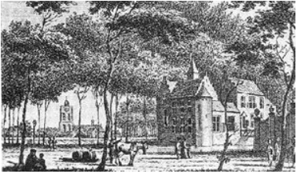
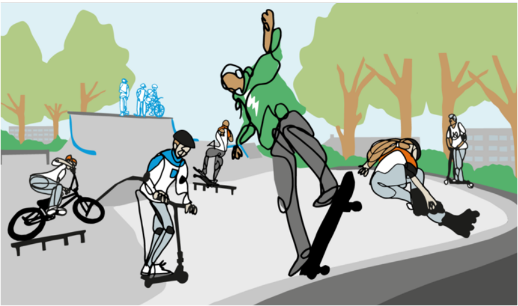

In Oosterhout staan verschillende ‘slotjes’ waarmee men in Oosterhout doelt op enkele, voornamelijk aan de Ridderstraat gelegen, landhuizen. Rond 1300 vestigden verschillende adellijke families zich in Oosterhout die voor zichzelf een huis (slotje) bouwden. Van deze slotjes zijn er nu nog vijf over, waarvan er vier gelegen zijn aan de Ridderstraat. Het merendeel is in de negentiende eeuw min of meer gemoderniseerd. Brakestein is één van de oudste slotjes en bestond uit een stenen hoofdgebouw, een afzonderlijke boerderij met schuren en bijgebouwen en de bijbehorende grond. Hier woonde onder andere Simon Hallungius, de eerste burgemeester van Oosterhout na de Franse tijd. Omdat in die tijd het aantal ramen de hoogte van de belasting bepaalde, zijn achter de vier luiken aan de voorzijde geen ramen aanwezig.
Een skatebaan wordt tegenwoordig niet meer alleen door jongeren met een skateboard gebruikt. Verschillende sporten ‘op wieltjes’ hebben er profijt en plezier van, zoals skaten, stuntsteppen, longboarden en BMX-en. Inwoners van de gemeente hebben behoefte aan één gave plek om Urban Sports uit te oefenen. Het biedt de mogelijkheid voor Oosterhoutse jongeren in hun eigen stad hun sport te beoefenen. Zowel voor beginners als gevorderden.